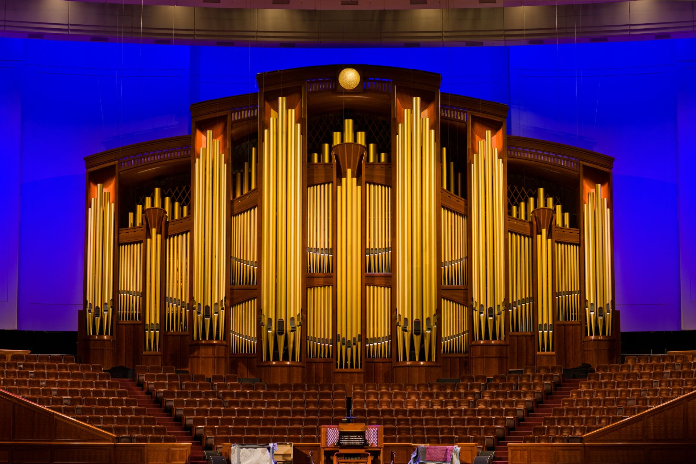

Since my childhood, music has been a great passion for me. I began studying music at a young age, learning to read music, sing, and play a variety of instruments including the piano and the guitar. Since middle school, I have participated in a miriad of choirs, leading to many performance opportunities in various performance venues. These are three of my favorite venues.
Conference Center of The Church of Jesus Christ of Latter-Day Saints
Dedicated Sunday October 8, 2000
Venue Capacity: 21,000
Main functions:
General Conference of The Church of Jesus Christ of Latter-Day Saints.
The First Presidency Christmas Devotional.
Organ Recitals at Temple Square.
Weekly rehearsals of The Tabernacle Choir at Temple Square (summer months only).
The Salt Lake City Tabernacle
Opened in October 1867
Venue capacity: 3,500
Main functions:
Music & the Spoken Word.
Piping Up Organ Concerts.
Weekly rehearsals of The Tabernacle Choir at Temple Square.
The Ryman Auditorium, Nashville, TN
Opened in 1892
Venue capacity: 2,362
Nicknames: "The Mother Church of Country Music", "The Carnegie Hall of the South"
Main functions:
Contemporary music concerts.
Cultural events in the Nashville community.
Comparrison of Venue Capacity
Singing in General Conference

In April of 2023, I had the unique opportunity to sing with the BYU Choirs in the Saturday afternoon session of the General Conference of The Church of Jesus Christ of Latter-Day Saints. I have always been grateful for the power of music to invite the Spirit of the Lord into people's lives. Participating in this global event was a life changing experience for me that I will never forget.